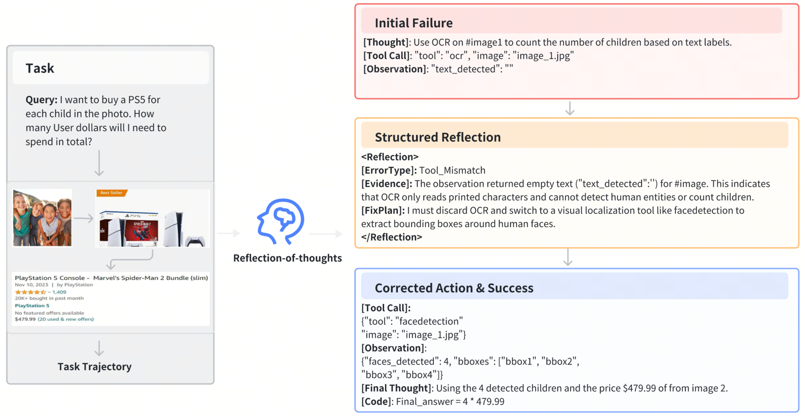
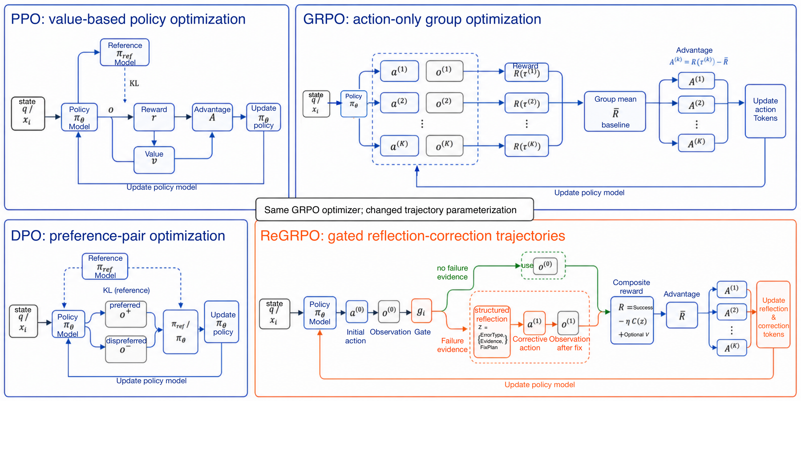

Teaching vision–language agents to diagnose and recover from their own tool-use failures — not just imitate successes.
Tool-augmented vision–language models (VLMs) can solve multimodal, multi-step tasks by calling external tools, yet they remain fragile in practice. Existing training has two common gaps: supervised fine-tuning (SFT) is built mostly on successful trajectories and offers little signal for recovery after tool failures, while sparse trajectory-level RL rewards provide limited guidance on which step failed and how to repair it.
We introduce ReGRPO (Reflection-augmented Group Relative Policy Optimization), a framework that learns reflection-guided correction in tool-using agents. ReGRPO starts with a structured reflective data engine: we execute near-miss actions to collect grounded failure observations, then build Reflection-of-Thought triplets (ErrorType, Evidence, FixPlan) paired with corrected actions for warm-start SFT. We then optimize reflection tokens and corrective actions jointly within local trajectories using group-relative advantages, and include a reflection-cost term to reduce unnecessary reflection. Experiments on GTA and GAIA show that, under the same backbone and tool suite, ReGRPO consistently outperforms strong open-source baselines and achieves the best results among the compared open-source controllers.
Three components turn failures into a learnable recovery skill.
Perturb a ground-truth tool call into a realistic near-miss, execute it for a grounded failure observation, and annotate a structured (ErrorType, Evidence, FixPlan) reflection + corrected action — explicit Error → Reflection → Correction supervision.
Reflection tokens become part of the optimized trajectory, so group-relative advantages directly scale gradients on diagnostic reflection and corrective actions. A reflection-cost term keeps reflection brief.
A deterministic trigger opens at most one local reflection–correction block per step, from hard-failure signals plus a lightweight confidence proxy — no external verifier calls at deployment.
The first two terms form a complete verifier-free objective (default λval=0). C(τ) penalizes reflection length (0 for one-shot success); V is an optional, training-only teacher verifier. Group advantage: Ai(k) = R(τi(k)) − R̄i.


Same Qwen2-VL-7B backbone and tool suite for every method; single-path, zero-verifier inference. AnsAcc = answer accuracy.
| Method (controller) | GTA AnsAcc | GAIA AnsAcc |
|---|---|---|
| MAT-Agent / T3-Agent (MAT-Qwen2-VL-7B) | 53.85 | 16.97 |
| SPORT (Tuned-Qwen2-VL-7B) | 60.26 | 20.61 |
| ReGRPO (default, λval = 0) | 67.66 | 23.35 |
The verifier-free default is already the strongest among the compared open-source controllers (+7.40 GTA / +2.74 GAIA over SPORT). An optional deterministic verifier reward adds a further +0.83 / +0.66.
@inproceedings{zhang2026regrpo,
title = {ReGRPO: Reflection-Augmented Group Relative Policy Optimization for Tool-Using Agents},
author = {Zhang, Binjie and Shou, Mike Zheng},
booktitle = {European Conference on Computer Vision (ECCV)},
year = {2026}
}